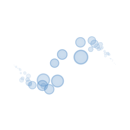
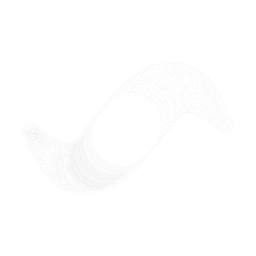
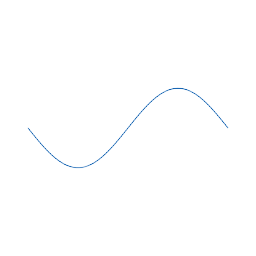
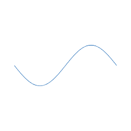
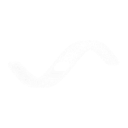
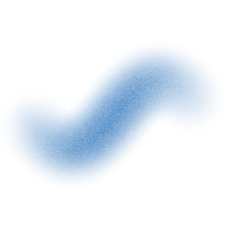
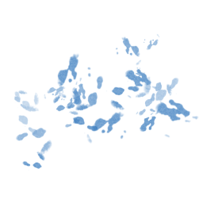

10 pincel(éis). A miniatura: antes, depois e a diferença (escuro = mudou). O traço: o anel cor-de-rosa é o cursor no tamanho do pincel — o traço deve enchê-lo. Aprovar: PH2D_PINCEIS_APROVA=1 (regrava a referência).
Bokeh
Miniatura
435 píxeis mudaram.

antes (a aprovada)depois (o motor de hoje)diferença (escuro = mudou)
Brush Pen
Miniatura
7321 píxeis mudaram.
antes (a aprovada)depois (o motor de hoje)

diferença (escuro = mudou)
Glaze Round
Miniatura
2284 píxeis mudaram.
antes (a aprovada)depois (o motor de hoje)diferença (escuro = mudou)
Halftone
Miniatura
1055 píxeis mudaram.
antes (a aprovada)depois (o motor de hoje)diferença (escuro = mudou)
Hard Round
Miniatura
66 píxeis mudaram.
antes (a aprovada)depois (o motor de hoje)diferença (escuro = mudou)
Mapping Pen
Miniatura
258 píxeis mudaram.

antes (a aprovada)

depois (o motor de hoje)diferença (escuro = mudou)
Marker Liner
Miniatura
4728 píxeis mudaram.
antes (a aprovada)depois (o motor de hoje)

diferença (escuro = mudou)
Soft Airbrush
Miniatura
10033 píxeis mudaram.
antes (a aprovada)

depois (o motor de hoje)diferença (escuro = mudou)
Stars
Miniatura
1 píxeis mudaram.
antes (a aprovada)depois (o motor de hoje)diferença (escuro = mudou)
Watercolor Splash
Miniatura
140 píxeis mudaram.

antes (a aprovada)depois (o motor de hoje)diferença (escuro = mudou)